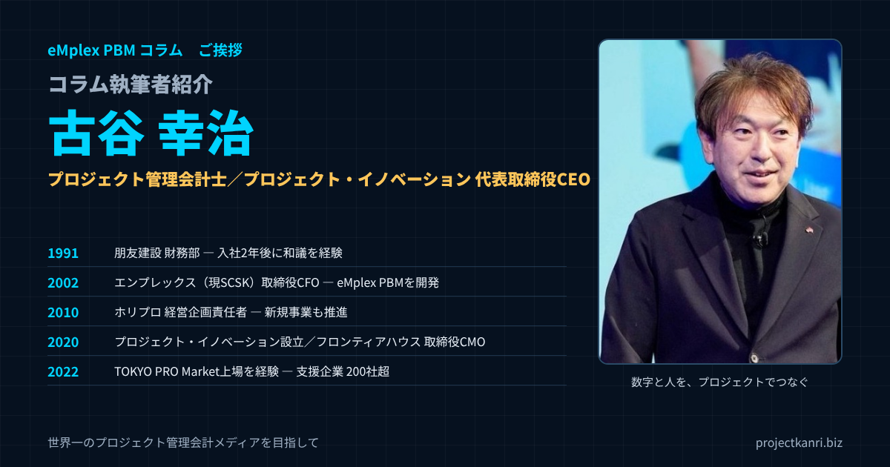

コラム執筆者紹介 ー 古谷幸治―プロジェクト管理会計士として歩んだ30年あまりの道のりと、このコラムでお伝えしたいこと

はじめに
はじめまして。株式会社プロジェクト・イノベーション代表取締役CEOの古谷幸治です。神奈川県横浜市の出身で、「プロジェクト管理会計士」として、プロジェクト型ビジネスにおける経営管理を専門にキャリアを重ねてきました。工業社会から知識社会へと軸足が移っていくなかで、私は自らを「知識労働者の生産性を測る伝道師」と位置づけ、プロジェクトごとの採算管理の仕組みをつくるプロフェッショナルとして、これまで200社を超える企業のコンサルティングに携わってきました。このコラムの第1回として、まずは私自身のこれまでの歩みを、少し丁寧にご紹介させてください。経歴を並べると業種も役職も一貫していないように見えるかもしれませんが、根っこにある問題意識はずっと変わっていません。それは「プロジェクトという単位で、会社の数字と人の働きをどう正しく結びつけるか」という一点です。
プロフィールの要点
- 肩書き：株式会社プロジェクト・イノベーション 代表取締役CEO／プロジェクト管理会計士
- 原点：朋友建設の財務部で、入社2年後に和議（民事再生）を経験
- CFO：エンプレックス（現SCSK）の取締役CFOとして経営管理・上場準備、eMplex PBMを開発
- 上場企業：ホリプロの経営企画責任者としてグループ経営管理と新規事業
- TPM上場：フロンティアハウスの取締役CMOとして2022年のTOKYO PRO Market上場を経験
- 実績：プロジェクト型ビジネスを中心に200社超の経営管理を支援
この記事は、このコラムの書き手である私が何者で、どのような経験をもとに、何を大切にして書いているのかをお伝えするためのものです。コラムの記事を読んでくださった方が、「この人はなぜこういう考え方をするのだろう」と思われたときに、その背景を知っていただける場所にしたいと考えています。
経歴を時系列でご紹介した後、それぞれの現場で学んだこと、私が考えるプロジェクト管理会計とは何か、仕事をするうえで大切にしている原則、現在提供しているサービス、そしてこのコラムの読み方を順にお伝えします。長い記事ですので、目次から気になるところだけを読んでいただいても構いません。
なお、この記事は、コラムの開始にあたって書いた自己紹介を、コラムの記事が増えてきたことにあわせて、大幅に書き足したものです。
プロフィール
まず、私の略歴を一覧でご紹介します。
| 年 | 経歴 |
|---|---|
| — | 神奈川県横浜市出身 |
| 1991年 | 不動産デベロッパー「朋友建設」に新卒入社。財務部に配属。入社2年後に和議（民事再生）を経験 |
| 2002年 | ITCRMソフトウェア会社「エンプレックス」（現SCSK、東証プライム）に参画。取締役CFOとして経営管理・経営企画・上場準備を担当。eMplex PBMを開発し、プロジェクト管理会計の手法を体系化 |
| 2010年 | エンプレックスの事業譲渡を経て「ホリプロ」（当時東証一部）へ。経営企画責任者として開示業務・子会社管理などグループ経営管理を担当。テレビ通販事業の責任者など新規事業も推進 |
| 2020年 | 株式会社プロジェクト・イノベーションを設立し、代表取締役CEOに就任。株式会社フロンティアハウスに参画し、取締役CMOに |
| 2022年 | フロンティアハウスの東京証券取引所TOKYO PRO Marketへの上場を経験 |
| 現在 | プロジェクト型ビジネスの経営管理のコンサルティング（200社超）、講座、eMplexシリーズの開発・提供 |
一覧にすると、不動産、IT、芸能、通販と、業種も役職もばらばらに見えるかもしれません。財務、CFO、経営企画、新規事業の責任者、マーケティングの責任者と、担ってきた役割もさまざまです。しかし、私の中では、これらはすべて一本の線でつながっています。その線とは、プロジェクトという単位で、会社の数字と人の働きをどう正しく結びつけるか、という問いです。以下、その線をたどるように、一つひとつの経験をご紹介します。
原点：1991年、建設業界での再生の現場
キャリアの出発点は1991年、不動産デベロッパー「朋友建設」への新卒入社でした。配属されたのは財務部です。入社してわずか2年後、会社は和議（民事再生）を経験することになります。バブル崩壊後の厳しい再生業務の現場で、数字が合わない中でどう会社を立て直すか、キャッシュフローと真正面から向き合う日々を過ごしました。決算書の数字を眺めているだけでは何も変わらない、現場に出て案件ごとの実態をひとつずつ確認しなければ本当の問題は見えてこない——そのことを、まだ20代だった当時に骨身に染みて学びました。この経験は、その後のキャリア全体を貫く「数字で経営を語る」という原点になっています。そして、建設業界というプロジェクト単位で採算を管理する業種に身を置いたことが、後年たどり着く「プロジェクト管理会計」という専門性の土台を形作ることになりました。
いま振り返ると、この時期に学んだことは三つあります。一つ目は、利益と現金は違うということです。帳簿の上では利益が出ていても、手元の現金が尽きれば会社は続きません。二つ目は、会社全体の数字の裏には、一つひとつの工事、一つひとつの案件の採算があるということです。会社全体の数字だけを見ていても、どこに問題があるのかは分かりません。三つ目は、数字が経営に届くまでの時間の大切さです。数字が遅れて届くことは、経営が暗闇の中で判断を続けることと同じです。
この三つは、その後の私の仕事のすべての土台になっています。このコラムで、プロジェクト別の採算、着地の見込み、資金繰り、月次決算の早期化といったテーマを繰り返し取り上げているのは、この原点があるからです。建設業や不動産業の予算と実績の管理については、建設業のカテゴリの記事で詳しく書いていますので、あわせてお読みいただければ幸いです。
2002年、エンプレックスでCFOに就任
2002年、アクセンチュア出身のメンバーが立ち上げたITCRMソフトウェア会社「エンプレックス」（現SCSK、東証プライム）に参画し、取締役CFOに就任します。経営管理、経営企画、そして上場準備という、スタートアップから成長企業へと駆け上がるフェーズに必要な経営基盤づくりのすべてに携わりました。資金繰り表と睨めっこする毎日から、月次決算の体制づくり、そして証券会社・監査法人とのやり取りまで、経営管理という仕事の全工程をこの時期に一通り経験させてもらったと思っています。この過程で生まれたのが、プロジェクトバジェット・マネジメントシステム「eMplex PBM」です。単なる会計システムではなく、プロジェクトごとの予算・実績・見通しをリアルタイムで可視化する仕組みとして、現場のニーズに合わせながら地道に磨き上げていきました。
CFOという立場で学んだのは、経営管理の仕組みは、作るだけでは意味がなく、経営の意思決定に使われて初めて価値を持つということです。どれほど精緻な数字を作っても、それが経営会議で使われなければ、ただの作業で終わります。逆に、多少粗くても、早く、経営が判断に使える数字を出すことができれば、会社は確実に変わります。
上場の準備では、予算と実績の差を説明できること、月次の数字を早く正確に締めること、内部統制の仕組みを整えることが求められました。これらは上場のための形式的な要件ではなく、会社が成長するために本来必要な経営の基盤だと、この時期に実感しました。上場準備のカテゴリの記事は、この経験をもとに書いています。
eMplex PBMは、もともと、自分たちの会社の経営管理のために必要だった仕組みでした。案件ごとの予算と実績、着地の見込みを、経理だけでなく営業や現場のリーダーも同じ画面で見られるようにしたい。その思いから生まれた仕組みが、同じ悩みを持つ多くのプロジェクト型ビジネスの会社にも役立つと分かり、プロダクトとして磨き上げていくことになりました。
業種を越えて体系化した「プロジェクト管理会計」
エンプレックス時代に特に力を注いだのは、不動産建設業で培った会計知識をベースに、映像制作業やソフトウェア開発／システムインテグレーション、ITサービス業など、業種の異なる複数のプロジェクト型ビジネスで経営管理の経験を積み重ねることでした。「儲かっているはずなのに現金がない」「進行中の案件がどれだけ利益を生んでいるか分からない」——業種を超えて繰り返し直面したこうした共通の悩みと向き合う中で、業種を横断して通用する「プロジェクト管理会計」という手法を自ら体系化するに至りました。会計ソフトが得意とする「終わった後の正確な実績把握」と、経営が本当に必要としている「進行中の着地見込み」との間には、いつも大きな溝があります。その溝を埋める仕組みをつくることこそが、自分の専門性だと考えるようになったのもこの時期です。コンサルティングを行った企業は200社を超え、私が磨いてきたフォーキャストマネジメント手法は、業界内でも大きな支持をいただいています。
業種が違えば、使う言葉も、商習慣も違います。建設業では実行予算や出来高、システム開発では人月や工数、映像制作では制作費や外部スタッフの費用。しかし、言葉を取り払ってみると、どの業種でも、案件を受注し、予算を立て、人と外注の力で仕上げ、その過程で採算が動き、最終的な利益と現金が残る、という構造は同じでした。この共通の構造に着目したことが、業種を横断するプロジェクト管理会計の体系化につながりました。
体系化の過程では、業種ごとの違いを無理に消すのではなく、共通の骨格の上に、業種ごとの言葉や商習慣を載せる形を目指しました。共通の骨格があるから、業種を越えて経験を活かせる。業種ごとの違いを尊重するから、現場に受け入れられる。このバランスは、いまのeMplex PBMの業種別のテンプレートの考え方にもつながっています。
2010年、ホリプロへ。経営企画と新規事業の両立
エンプレックスの事業譲渡を経て、2010年には芸能プロダクション「ホリプロ」（当時東証一部）へと大きく舞台を移し、経営企画責任者として開示業務や子会社管理などグループ経営管理を担当しました。財務・管理会計のプロフェッショナルとして数字の世界を突き詰めてきた一方で、この時期には新規事業開発にも積極的に携わり、テレビ通販事業の責任者として事業そのものを推進する立場も経験しています。数々のテレビ通販ブランドやタレントブランドのプロデュース、キャスティングサービスの立ち上げなど、「管理する側」だけでなく「事業をつくる側」の経験を積めたことは、その後の起業への大きな糧となりました。数字を締める側と、数字を生み出す側の両方に立ったことで、経営管理という仕事の見え方が大きく変わったのを覚えています。
上場企業の経営企画の責任者として学んだのは、外部への開示と、グループの経営管理の重さです。上場企業の数字は、株主や投資家をはじめとする多くの人に見られ、その信頼の上に会社が成り立っています。子会社を含めたグループ全体の数字を、正確に、期限までにまとめることの責任の大きさを、身をもって知りました。
一方で、新規事業の責任者として事業を推進する立場に立ったことで、管理する側の論理だけでは事業は伸びないことも学びました。事業をつくる側には、不確実な中で判断し、走りながら修正していくスピードが求められます。管理の仕組みは、そのスピードを妨げるものではなく、支えるものでなければなりません。この両方の視点を持てたことが、いまのコンサルティングやプロダクトづくりに生きています。
子会社の管理では、親会社と子会社とで、数字の締めの日程も、勘定科目の使い方も、管理の物差しもそろえることの難しさと大切さを学びました。グループの数字がそろって初めて、経営はグループ全体で判断することができます。この経験は、いまのコンサルティングで、部門やセグメント、プロジェクトのコードの体系をそろえることを重視する姿勢につながっています。
フロンティアハウスでのTOKYO PRO Market上場
2020年には、株式会社フロンティアハウスに参画し、取締役CMOとして、2022年の東京証券取引所TOKYO PRO Marketへの上場を経験しました。CFOとしての上場準備、上場企業の経営企画責任者としての開示に続き、今度はマーケティングの責任者という立場で、上場という節目に関わったことになります。
TOKYO PRO Marketは、プロの投資家を対象とした株式市場で、J-Adviserと呼ばれる指定のアドバイザーの支援のもとで上場を目指す仕組みです。一般の市場とは制度が異なるものの、上場企業として求められる管理の体制や、開示の責任があることに変わりはありません。中堅・中小企業にとって、成長の段階に合わせた上場の選択肢の一つになっています。
この経験を通じて、私は、上場の準備を、管理部門だけの仕事ではなく、営業やマーケティングを含めた会社全体の取り組みとして進めることの大切さを、改めて感じました。数字の管理の仕組みと、事業を伸ばす仕組みが、同じ方向を向いていること。それが、上場を目指す会社にも、上場した後の会社にも求められることだと考えています。
上場を目指す会社に伝えたいこと
CFOとしての上場準備、上場企業の経営企画責任者としての開示、取締役CMOとしてのTOKYO PRO Marketへの上場。私は、上場という節目に、異なる立場から関わってきました。その経験から、上場を目指す会社の皆さんにお伝えしたいことがあります。
それは、上場の準備は、上場のためだけに行うものではない、ということです。月次決算を早く正確に締めること、予算と実績の差を説明できること、内部統制を整えること。これらは、上場の審査のために求められる要件であると同時に、会社が成長し続けるために本来必要な経営の基盤です。上場の準備を、会社の経営管理を一段引き上げる機会として捉えれば、その努力は上場した後も、あるいは上場を選ばなかった場合でも、会社の力として残ります。
そして、上場は管理部門だけで実現するものではありません。営業も、現場も、マーケティングも、同じ数字を見て、同じ方向に進むことが求められます。上場準備のカテゴリの記事では、監査法人や専門家の選び方、月次決算の早期化など、実務の要点を書いていますので、参考にしていただければ幸いです。
2020年、独立という選択
2020年、株式会社プロジェクト・イノベーションを設立し、代表取締役CEOに就任しました。不動産、IT、芸能、通販と、一見すると脈絡のない業種を渡り歩いてきたように見える私のキャリアですが、その根底には常に「プロジェクトという単位で、人と数字と成果をどう結びつけるか」という一貫した問いがありました。知識労働の価値は、工業社会のように時間や工数だけでは測ることができません。だからこそ、プロジェクトごとの採算管理を通じて、知識労働者一人ひとりの生産性を正しく可視化する仕組みが必要だと考え、独立という道を選びました。会社員として仕組みをつくる立場から、その仕組み自体をプロダクトとして世に問う立場へ——遅いスタートだったかもしれませんが、これまでの経験すべてを注ぎ込める挑戦だと感じています。実際に独立してみると、会社員時代には見えていなかった景色もたくさんありました。誰かの決裁を待つのではなく、自分たちの仮説を自分たちの言葉で経営者に伝え、その場で意思決定に関わっていく緊張感と手応えは、何物にも代えがたいものです。
独立してからは、業種も規模もさまざまな会社とご一緒する機会をいただいています。創業間もないスタートアップから、上場を目指す成長企業、長い歴史を持つ中堅企業まで、会社の段階によって課題は違いますが、プロジェクトという単位で数字と人を結びつけるという私の仕事の軸は変わりません。
五つの現場で学んだこと
ここまでの経歴を、それぞれの現場で学んだことという視点で整理すると、次のようになります。
| 現場 | 立場 | 学んだこと |
|---|---|---|
| 朋友建設 | 財務部 | 利益と現金は違う。会社の数字の裏には案件ごとの採算がある |
| エンプレックス | 取締役CFO | 仕組みは経営の判断に使われて初めて価値を持つ |
| 業種横断の支援 | CFO・コンサルタント | 業種が違っても、プロジェクト型ビジネスの構造は同じ |
| ホリプロ | 経営企画責任者・新規事業責任者 | 管理する側と事業をつくる側、両方の視点が必要 |
| フロンティアハウス | 取締役CMO | 上場は管理部門だけでなく会社全体の取り組み |
どの現場でも、私は数字の側にいました。しかし、数字そのものが目的だったことは一度もありません。数字は、経営が正しく判断し、働く人の頑張りが正しく報われるための道具です。この考え方は、立場や業種が変わっても、一貫して変わりませんでした。
もう一つ、すべての現場に共通していたのは、問題の多くが人の能力ではなく、仕組みの不在から生まれていたということです。赤字の案件に誰も気づかないのは、担当者が怠けているからではなく、案件ごとの採算を見る仕組みがないからです。月次の数字が遅いのは、経理の担当者の能力が低いからではなく、情報が経理に集まる仕組みがないからです。だから私は、人を責める前に、仕組みを疑うことにしています。
そして、どの現場にも、数字の向こう側で懸命に働く人たちがいました。工事の現場で汗を流す人、徹夜で開発を続ける人、タレントやスタッフとともに作品をつくる人。その人たちの頑張りが、会社の数字の中で正しく見えるようにすることが、私の仕事の意味だと思っています。
CFO・経営企画・事業責任者・CMOを経験して見えた経営管理の全体像
私は、財務の担当者、CFO、経営企画の責任者、新規事業の責任者、そしてマーケティングの責任者と、経営管理を異なる立場から経験してきました。同じ会社の数字でも、立場によって見え方はまったく違います。
| 立場 | 数字の主な目的 |
|---|---|
| 財務の担当者 | 正確に記録し、資金を守る |
| CFO | 経営の判断を支え、外部からの信頼を得る |
| 経営企画の責任者 | 計画を立て、グループ全体を同じ方向に動かす |
| 新規事業の責任者 | 走りながら判断する手がかり |
| マーケティングの責任者 | 顧客と市場の反応を測る |
財務の担当者にとって、数字は正確に記録し、資金を守るためのものです。CFOにとっては、経営の判断を支え、外部からの信頼を得るためのものです。経営企画にとっては、計画を立て、グループ全体を同じ方向に動かすためのものです。事業の責任者にとっては、走りながら判断するための手がかりであり、マーケティングの責任者にとっては、顧客と市場の反応を測るものです。
これらの立場を行き来したことで、私は、経営管理の仕組みは、特定の立場の人のためだけに作ってはいけない、と考えるようになりました。経理のための仕組みは現場に使われず、現場のための表は経営の判断に使えない。よい経営管理の仕組みとは、一つのデータを、それぞれの立場の人が、それぞれの目的で使えるものです。プロジェクトという単位は、その共通の土台になると考えています。
私が考えるプロジェクト管理会計
このコラムの中心にあるのが、プロジェクト管理会計という考え方です。改めて、私がどのように定義しているのかをお伝えします。
プロジェクト管理会計とは、プロジェクトという単位で、予算、実績、着地の見込み、人の稼働、そして資金を一体で管理し、経営の意思決定と、働く人の正当な評価に結びつけるための管理会計の手法です。
| 柱 | 内容 | 関連するカテゴリ |
|---|---|---|
| 予算 | 案件ごとの実行予算、年度予算 | プロジェクト収支管理、FP&A・経営管理 |
| 実績 | 売上・労務費・外注費・経費の案件別の集計 | 原価計算実務 |
| 着地見込み | 実績＋今後の見込みで最終の採算を予想 | フォーキャスト経営 |
| 人の稼働 | 工数の記録、稼働率、時間単価 | タイムシート、人材マネジメント |
| 資金 | 案件ごとの入出金から全社の資金繰りへ | 建設業、FP&A・経営管理 |
一般的な会計は、会社全体や部門という単位で、終わった期間の実績を正確に記録することを得意としています。しかし、プロジェクト型のビジネスの経営者が本当に知りたいのは、いま進んでいる案件が最終的にいくらの利益を残すのか、そして来月、再来月の現金は足りるのか、という未来の数字です。プロジェクト管理会計は、この過去の実績と未来の見込みの間にある溝を埋めるためのものです。
そのために欠かせないのが、人の時間の記録です。プロジェクト型のビジネスでは、原価の大半が人の時間です。誰が、どの案件に、どれだけの時間を使ったのかが分からなければ、案件の本当の採算は分かりません。タイムシートのカテゴリの記事を多く書いているのは、このためです。
そして、着地の見込みを毎月更新し、予算との差を早く把握して手を打つ。これが、私がフォーキャスト経営と呼んでいる経営の進め方です。予算は期首に決めた計画、着地の見込みは今の時点で最も確からしい見通しです。その差に経営が向き合うことで、会社は期末を待たずに打ち手を講じることができます。
なぜ「プロジェクト」という単位なのか
私がプロジェクトという単位にこだわるのには理由があります。それは、知識社会において、価値が生まれる単位が、工場の生産ラインからプロジェクトへと移っているからです。
建設の工事も、システムの開発も、コンサルティングの案件も、映像や広告の制作も、イベントも、一つひとつが始まりと終わりを持つプロジェクトです。そして、製造業や小売業のような、従来はプロジェクト型ではなかった業種でも、新製品の開発、店舗の出店、システムの導入、新規事業の立ち上げなど、プロジェクトとして進む仕事の比重は年々高まっています。
ところが、多くの会社の会計や管理の仕組みは、部門や勘定科目という単位で数字を捉えるように作られています。部門の損益は分かっても、どのプロジェクトが利益を生み、どのプロジェクトが利益を食っているのかは分からない。この仕組みと現実のずれが、プロジェクト型ビジネスの多くの悩みの根っこにあります。だからこそ、プロジェクトを経営管理の基本の単位に据えることが必要だと考えているのです。
フォーキャストマネジメントという手法
私がプロジェクト管理会計の中でも特に大切にしているのが、フォーキャストマネジメント、つまり着地の見込みによる経営です。
多くの会社の経営会議では、先月の実績と予算の差が報告されます。しかし、先月の実績は、もう変えることができません。経営が議論すべきなのは、このままいくと期末にどこに着地するのか、そして予算との差を埋めるために何をするのか、という未来の話です。
フォーキャストマネジメントでは、案件ごとに、これまでの実績と、今後発生する売上と原価の見込みを毎月更新し、期末の着地を予想します。受注済みの案件だけでなく、受注の見込みの案件や、まだ見えていない部分も含めて、会社全体の着地を描きます。そして、着地と予算の差を、経営が打ち手を議論する出発点にします。
この手法の要は、精度の高い予想を一度で作ることではなく、毎月更新し続けることです。毎月更新していれば、予想は少しずつ現実に近づき、外れた理由を振り返ることで、予想する力そのものが組織の中に育っていきます。フォーキャスト経営のカテゴリでは、三つのシナリオの使い分けや、業績予想の仕組みなど、この手法の実践の方法を詳しく書いています。
仕事をするうえで大切にしている7つの原則
コンサルティングでも、プロダクトづくりでも、このコラムの執筆でも、私が大切にしている原則があります。
| No. | 原則 |
|---|---|
| 1 | 結論から伝える |
| 2 | 完璧より早さを優先する |
| 3 | 人を責める前に仕組みを疑う |
| 4 | 小さく始めて続ける |
| 5 | 現場の言葉で話す |
| 6 | 数字と人の両方を見る |
| 7 | 事実と意見を分ける |
一つ目は、結論から伝えることです。経営者の時間は限られています。何が問題で、何をすべきかを、まず伝えるようにしています。このコラムの記事の多くが、最初に結論の章を置いているのはそのためです。
二つ目は、完璧より早さを優先することです。一円の誤差もない数字を一か月後に出すよりも、判断に影響しない範囲の誤差を許容して、早く出すほうが経営には役立ちます。三つ目は、人を責める前に仕組みを疑うことです。先ほどお伝えしたとおり、多くの問題は仕組みの不在から生まれます。
四つ目は、小さく始めて続けることです。最初から完璧な仕組みを目指すと、作ることが目的になり、使われないまま終わります。表計算ソフトの一枚のシートからでも、まず始めて、毎月使い続けることが大切です。五つ目は、現場の言葉で話すことです。会計の専門用語で説明しても、現場のプロジェクトマネージャーには伝わりません。現場の言葉で、現場の判断に役立つ形で数字を届けることを心がけています。
六つ目は、数字と人の両方を見ることです。数字だけを見ていると、その数字を作っている人の頑張りや苦労が見えなくなります。人だけを見ていると、会社としての判断を誤ります。七つ目は、事実と意見を分けることです。このコラムでも、制度や外部の情報は確認できた事実だけを書き、私の考えは私の考えとしてお伝えするようにしています。
コンサルティングの進め方
私のコンサルティングは、仕組みを作って納品して終わり、という形ではありません。仕組みが会社に根づき、社内の人だけで回せるようになるまでをご一緒することを大切にしています。一般的な進め方は次のとおりです。
| 段階 | 主な内容 |
|---|---|
| 1. 診断 | 経営者の問題意識、数字の作り方、会議、システム・エクセルの現状を確認し、優先順位をつける |
| 2. 設計と試行 | 実際の数字で表・手順・会議資料の型を作り、何度か回して直す |
| 3. 定着 | 社内の担当者だけで運用できるように支援する |
会社の状況により内容と期間は異なります。
最初の診断では、経営者の方の問題意識を伺い、現状の数字の作り方、会議の進め方、システムやエクセルの使い方を拝見します。そのうえで、どこに仕組みの不在があるのかを整理し、優先順位をつけます。すべてを一度に変えようとせず、効果が大きく、始めやすいところから着手するのが基本です。
設計と試行の段階では、プロジェクト別の予算と実績の表、着地見込みの更新の手順、月次の締めのカレンダー、経営会議の資料の型などを、実際の数字を使って作り、何度か回してみます。机の上で完璧な仕組みを設計するよりも、一度回してみて、使いにくいところを直していくほうが、早く確実に定着します。
定着の段階では、仕組みを回す社内の担当者が、自分たちだけで運用できるように支援します。最終的に、私がいなくても仕組みが回り続けることが、コンサルティングの成功だと考えています。
初めてお会いする経営者の方に、必ずお聞きする五つの質問
コンサルティングのご相談で初めて経営者の方にお会いするとき、私が必ずお聞きする質問があります。会社の経営管理の状態は、この五つの質問への答え方で、おおよそ分かります。
| 質問 | 確かめたいこと |
|---|---|
| いま進んでいる案件のうち、赤字になりそうな案件はどれですか | 案件ごとの着地見込みの有無 |
| 今期の着地は、予算に対してどのくらいになりそうですか | 全社のフォーキャストの有無 |
| 三か月後の現金の残高はいくらになりそうですか | 資金繰りの見通しの有無 |
| 先月の数字は、月末から何日で経営会議に出ましたか | 月次決算の速さ |
| 社員の時間は、どの案件にどれだけ使われていますか | 工数の記録と原価化の有無 |
すぐに数字で答えられる質問が多い会社は、すでに経営管理の仕組みがある程度整っています。答えに詰まる質問がある会社は、そこが仕組みの不在している場所です。責める意図はまったくありません。むしろ、答えに詰まる質問こそが、これから会社を強くするための出発点になります。
読者の皆さんも、ぜひご自身の会社に当てはめて考えてみてください。すべての質問に、根拠のある数字で答えられる状態をつくること。それが、プロジェクト管理会計の仕組みづくりの一つのゴールです。
なぜ人を育てることに力を入れるのか
コンサルティングを続ける中で、私が繰り返し感じてきたのは、どれほどよい仕組みを作っても、それを回す人がいなければ、いずれ元に戻ってしまうということです。仕組みを設計した担当者が異動したり退職したりすると、表は更新されなくなり、会議は元の報告の場に戻っていきます。
プロジェクト管理会計の仕組みを回すには、会計の知識、現場の業務の理解、システムの操作、そして経営と現場の間に立って調整する力が必要です。こうした力を併せ持つ人材は、どの会社でも不足しています。そこで、プロジェクト管理会計の仕組みを社内で運用し、経営と現場をつなぐ人材を、スーパーアドミニストレーターと名づけ、その養成講座と認定制度を設けました。
スーパーアドミニストレーターは、数字を作る人ではなく、数字を使って会社を動かす人です。経理の担当者、経営企画の担当者、プロジェクトの事務局の担当者など、さまざまな立場の方が、この役割を担える可能性を持っています。管理部門の仕事が、会社の成長を支える誇りある仕事として評価される。そのための人材育成に、これからも力を入れていきたいと考えています。
知識労働者の生産性を測る伝道師として
私は、自らを「知識労働者の生産性を測る伝道師」と位置づけています。少し大げさな言い方かもしれませんが、この言葉には私なりの思いがあります。
ピーター・ドラッカーは、二十世紀の経営の最大の貢献は、製造業における肉体労働の生産性を高めたことであり、二十一世紀の経営に求められる最大の貢献は、知識労働と知識労働者の生産性を高めることだと述べました。工場の生産性は、時間あたりの生産量で測ることができます。しかし、知識労働の生産性は、そう簡単には測れません。
私は、プロジェクトこそが、知識労働の生産性を測るための単位になると考えています。一つのプロジェクトに、誰が、どれだけの時間をかけ、どれだけの価値を生み出したのか。それを数字で捉えることができれば、知識労働者一人ひとりの貢献を正しく評価し、正当な対価に結びつけることができます。ドラッカーの考え方とプロジェクト管理会計の関係については、別の記事で詳しく書いていますので、関心のある方はぜひお読みください。
働く人の頑張りが、正しく報われるために
プロジェクト管理会計の目的を一言で表すなら、私は「会社の数字と、そこで働く一人ひとりの頑張りが、正しく報われるようにすること」だと答えます。
プロジェクト型のビジネスでは、同じ売上の案件でも、それを仕上げるためにかかった時間や工夫は案件ごとに大きく違います。難しい案件を、知恵と努力で予算内に収めたプロジェクトマネージャーがいる一方で、仕組みがなければ、その貢献は会社全体の数字の中に埋もれてしまいます。逆に、見積の甘さから赤字になった案件の責任が、現場の頑張りの不足として片づけられてしまうこともあります。
案件ごとの予算、実績、着地の見込み、そして工数を正しく記録していれば、誰がどの案件でどのような価値を生み出したのかを、事実に基づいて語ることができます。それは、評価を公正にするだけでなく、次の見積や人の配置をよりよいものにするための学びにもなります。数字は、人を管理し、責めるための道具ではなく、人の頑張りを正しく伝え、組織として学ぶための道具であるべきだと、私は考えています。
中堅・中小企業こそ、プロジェクト管理会計を
プロジェクト管理会計というと、大企業の高度な管理の手法のように聞こえるかもしれません。しかし、私は、中堅・中小企業こそ、プロジェクト管理会計が必要だと考えています。
大企業であれば、一つの案件の赤字は、他の多くの案件の利益で吸収できます。しかし、中堅・中小企業では、一つの大型の案件の赤字が、会社の一年間の利益を吹き飛ばし、資金繰りを危うくすることがあります。案件の数が少なく、一つひとつの案件の重みが大きいからこそ、案件ごとの採算を早く把握し、手を打つ仕組みが欠かせないのです。
そして、中堅・中小企業のプロジェクト管理会計は、大がかりなシステムがなくても始められます。案件の一覧、案件ごとの予算と実績、着地の見込み、そして工数の記録。表計算ソフトのシートからでも、毎月続ければ、経営の見え方は確実に変わります。このコラムの記事に、エクセルのテンプレートを添えているものがあるのは、まずは手元から始めていただきたいという思いからです。
経営会議を「報告の場」から「判断の場」へ
200社を超える会社の経営会議に参加させていただく中で、私が最も多く目にしてきたのは、経営会議が報告の場で終わっている光景です。各部門が先月の実績を順番に報告し、質問がいくつか出て、時間切れで終わる。そこでは、何も決まりません。
経営会議を判断の場に変えるには、三つのことが必要だと考えています。一つ目は、判断に必要な数字が、会議の前にそろっていることです。月次決算が遅く、会議の当日に数字を確認しているようでは、議論は数字の確認で終わってしまいます。二つ目は、過去の実績ではなく、着地の見込みと予算との差を議題の中心に置くことです。三つ目は、決めたことを記録し、次の会議で実行の状況を確認することです。
プロジェクト管理会計の仕組みは、この三つを支えるためにあります。早く正確な月次の数字、案件ごとの着地の見込み、そして打ち手の実行の管理。経営ガバナンスのカテゴリでは、取締役会や経営会議の議題の設計や運営の方法を詳しく書いています。
「黒字なのに現金がない」をなくしたい
私の原点である朋友建設での経験は、利益と現金は違うということを、身をもって教えてくれました。そして、200社を超える会社をご支援してきた今でも、「黒字なのに現金が足りない」というご相談は後を絶ちません。
プロジェクト型のビジネスでは、案件に着手してから入金されるまでの間に、外注費や人件費の支払いが先に出ていきます。大型の案件を受注すればするほど、一時的に必要な運転資金は膨らみます。損益の上では順調に成長しているのに、資金が追いつかない。これは、プロジェクト型ビジネスが成長の過程で必ず直面する壁です。
この壁を越えるには、案件ごとの入金と支払いの予定を、全社の資金繰りの見通しにつなげる仕組みが必要です。受注の段階で支払いの条件を確認し、案件ごとの資金の動きを月別に描き、全社で合計する。そうすれば、資金が最も少なくなる月を前もって知り、借入や入金条件の交渉といった手を早めに打つことができます。黒字倒産という言葉を、一社でも多くの会社から遠ざけたい。それが、私がこの仕事を続ける理由の一つです。
eMplexシリーズという挑戦
現在は、名刺交換を起点にプロジェクトを中心としたBtoB CRMの世界観を、「eMplex」シリーズとして展開しています。eMplex J.A.R.V.I.S.、eMplex PBM、eMplexグループウェア、eMplexワークフロー、eMplex与信反社チェック、eMplexタイムシート、eMplex MA（BtoB CRMマーケティング）、eMplex SFA、eMplexフォーキャスト、eMplex経費精算、eMplex for TOKYO PRO Market IPO、eMplex HR、eMplexリスト＆メール営業ツール、そしてFrontier Dashboard——こうしたプロダクト群を通じて、プロジェクト型ビジネスに関わる経営管理のあらゆる局面をカバーしようとしています。ひとつひとつは地味な機能に見えるかもしれませんが、すべてが「プロジェクト単位で経営を見る」という一つの思想でつながっています。
中でも中心にあるのが、プロジェクトバジェット・マネジメントシステムのeMplex PBMです。業種別のテンプレートで、売上、労務費、外注費、直接経費の予算をプロジェクトごとに作り、実績と着地見込みを比べ、粗利率のアラートで採算の悪化に早く気づく。タイムシートの工数を労務費の原価に連携し、月次は仮締めと本締めの二段階で数字を確定させ、財務会計の仕訳データとして出力する。私がCFOとして、またコンサルタントとして、現場で必要だと感じてきた機能を形にしたものです。
AIとこれからのプロジェクト管理会計
eMplexシリーズの中には、eMplex J.A.R.V.I.S.という名前のプロダクトもあります。AIの技術が急速に進歩する中で、プロジェクト管理会計のあり方も変わっていくと考えています。
これまで、プロジェクトの数字を集め、表にまとめ、差異を分析し、資料を作る作業には、多くの人の時間が使われてきました。こうした集計や整理の作業は、AIやシステムが担う部分が増えていくでしょう。そのとき、人に残る仕事は何か。それは、数字の意味を読み取り、判断し、人を動かすことです。
AIがどれほど進歩しても、どの案件を受けるのか、どの事業に投資するのか、誰にどの仕事を任せるのかを決めるのは人です。そして、その判断の質は、判断の材料となる数字の質と、数字が届くまでの速さで決まります。AIの時代だからこそ、プロジェクトという単位で、正しい数字を早く届ける仕組みの価値は高まると私は考えています。この考え方については、未来のプロジェクト管理会計のカテゴリで書いています。
「人脈の森」に込めた想い
「人脈の森」も、このeMplexラインナップの一つとして生まれたプロダクトです。長年、財務・管理会計という「数字」の世界に軸足を置いてきた私が、あえて「人脈」という一見数値化しづらいテーマに取り組んだのには理由があります。プロジェクト経営を突き詰めていくと、最終的にすべての成果は「誰と、どんな信頼関係を築けているか」という一点に帰結することに、私自身、何度も気づかされてきたからです。予算も、フォーキャストも、採算管理の仕組みも、それを動かすのは結局のところ人であり、人と人との関係性にほかなりません。どれほど精緻な予実管理の仕組みを整えても、それを運用するのは人であり、案件を引き寄せてくるのもまた人と人との信頼関係です。
人という資産を、農耕型で育てる
名刺交換から生まれる「人」というプロジェクト最大の資産を、狩猟型ではなく農耕型で、誠実に可視化し育てていく——それが「人脈の森」というプロダクトに込めた想いです。数字の世界を長く歩んできたからこそ、人との関係もまた、感覚や気合いではなく、仕組みとして誠実に積み重ねていけるはずだと、私は信じています。名刺交換した瞬間の熱量は、時間が経てば必ず薄れていきます。その熱量が薄れる前に、誰と、いつ、どんな話をしたのかを記録し、次に会うきっかけを仕組みとして作っておく。そうした地道な積み重ねこそが、プロジェクトという単位で成果を生み出す土壌になると考えています。
最後に残るのは、数字ではなく人
不動産、IT、芸能という異なる業種を渡り歩く中で、いつも最後に残ったのは「誰と仕事をしてきたか」という記憶でした。数字を突き詰める仕事をしてきたからこそ、最後に残るのは数字ではなく人だと、実感を持って言うことができます。決算書の数字は毎期リセットされますが、その数字をつくった人たちとの関係は、業種やフェーズが変わっても不思議とつながり続けてきました。
このコラムで人材マネジメントのカテゴリを設け、プロジェクト管理会計と人間関係といったテーマも取り上げているのは、この実感があるからです。数字の仕組みは、人が気持ちよく働き、その頑張りが正しく報われるためにあるものです。数字のための数字にならないよう、いつも自分に言い聞かせています。
これまでご一緒してきた経営者や現場の皆さん、同僚、そしてこのコラムを読んでくださる皆さんとの出会いに、改めて感謝しています。
名刺から始まる、プロジェクトのためのCRM
eMplexシリーズは、名刺の交換を起点に、人、会社、商談、プロジェクト、そして収支までを一つにつなぐことを目指しています。数字の専門家である私が、なぜ営業やCRMの領域にまで踏み込んでいるのか、不思議に思われる方もいるかもしれません。
理由は単純で、プロジェクトの採算は、受注した瞬間にほぼ決まってしまうからです。どの顧客から、どのような条件で、どのくらいの見積で受注したのか。その入口の情報と、プロジェクトの実績の情報がつながっていなければ、なぜこの案件は儲かり、なぜあの案件は赤字になったのかを、次の受注に活かすことができません。
プロジェクトの収支の管理を突き詰めていくと、営業の入口の管理にたどり着き、営業の入口を突き詰めていくと、人と人との関係にたどり着く。私の関心が、会計から人脈へと広がっていったのは、この自然な流れの結果です。営業支援のカテゴリの記事では、BtoBのCRMを経営の基盤として活用する考え方を書いています。
200社の現場で見えてきた課題
200社を超える現場に入らせていただく中で、私が繰り返し痛感してきたのは、プロジェクト型ビジネスの多くが「経営管理の仕組み」を持たないまま規模だけを拡大させてしまうという現実です。売上は伸びているのに手元のキャッシュが増えない、案件ごとの採算がブラックボックスのまま次の受注に走ってしまう——そうした企業を数字の面から立て直す仕事は、決して華やかではありませんが、経営の土台を静かに、しかし確実に強くしていく仕事だと考えています。多くの場合、原因は担当者の能力不足ではなく、仕組みそのものが存在しないことにあります。だからこそ私は、コンサルタントとしてだけでなく、その仕組みそのものをプロダクトとして形にし、より多くの経営者・実務家に届けたいと考え、今の事業に取り組んでいます。たとえば、受注が好調で売上は前年を大きく上回っているのに、資金繰りは年々苦しくなっているという相談を受けることは少なくありません。話を伺うと、案件ごとの実行予算と実績を突き合わせる仕組みがなく、赤字案件の存在に誰も気づけていなかった、というケースがほとんどです。
200社を超える会社をご支援する中で、よく出会う課題を整理すると、次のようになります。
| 課題 | 背景にある仕組みの不在 | コラムの関連カテゴリ |
|---|---|---|
| 売上は伸びているのに現金が残らない | 案件ごとの入出金の見通しがない | 建設業、FP&A・経営管理 |
| 赤字の案件に気づくのが遅い | 実行予算と着地見込みの管理がない | プロジェクト収支管理、フォーキャスト経営 |
| 案件の本当の原価が分からない | 工数の記録と人件費の原価化がない | タイムシート、原価計算実務 |
| 月次の数字が遅い | 情報が経理に集まる仕組みがない | IPO・上場準備 |
| 経営会議が報告で終わる | 判断のための数字と議題の型がない | 経営ガバナンス |
| 頑張りが評価に結びつかない | 人の貢献を測る物差しがない | 人材マネジメント |
これらの課題は、業種や会社の規模を問わず、驚くほど共通しています。そして、そのほとんどは、特別な才能や大きな投資がなくても、仕組みを整えることで解決できるものです。このコラムでは、その仕組みのつくり方を、できるだけ具体的に、明日から使える形でお伝えしたいと考えています。
30年あまりで変わったこと、変わらないこと
1991年に社会に出てから30年あまりの間に、経営管理を取り巻く環境は大きく変わりました。手書きの帳簿や紙の伝票は会計ソフトに置き換わり、表計算ソフトが普及し、いまではクラウドのサービスで、どこからでもリアルタイムに数字を見られるようになりました。働き方も、オフィスに集まる形から、場所を問わない形へと広がっています。
一方で、変わらないこともあります。利益と現金は違うこと。会社の数字の裏には、一つひとつの案件の採算があること。数字が経営に届くまでの時間が、経営の判断の速さを決めること。そして、数字を作り、数字を使うのは人であること。これらは、私が財務部に配属された頃から、何一つ変わっていません。
道具がどれほど便利になっても、何を、どの単位で、どのくらいの速さで見るのかという設計がなければ、数字は経営の役に立ちません。新しい道具を使いこなしながら、変わらない原理を大切にする。それが、このコラムを書くうえでの私の姿勢でもあります。
そして、変わらない原理を、新しい道具でより早く、より多くの人に届けることができる時代になったとも感じています。クラウドやAIの力を借りれば、かつては大企業にしかできなかった案件ごとの採算の管理や着地の見込みの更新を、中堅・中小企業でも無理なく続けられるようになりました。この変化を、一社でも多くの会社の力に変えていきたいと考えています。
「プロジェクト管理会計士」という肩書きに込めた意味
余談ですが、「プロジェクト管理会計士」という肩書きは、公的な資格の名称ではありません。私が自らの専門性を一言で表すために名乗り始めた、いわば造語です。工業社会においては、工場のラインをどれだけ効率的に稼働させるかが生産性の指標でした。しかし知識社会では、価値を生み出す単位は「工場」ではなく「プロジェクト」に移り変わっています。にもかかわらず、多くの企業の会計・管理の仕組みは、いまだに工業社会の発想のまま——つまり、部門や勘定科目という単位でしか数字を捉えられていません。プロジェクトという単位で予算・実績・見通し・人の稼働を横串で管理できて初めて、知識労働者一人ひとりの生産性が正しく評価され、正当な対価にもつながっていく。私はそう信じています。「プロジェクト管理会計士」という肩書きは、この考え方を体現する仕事を、これからも続けていくという、自分自身への宣言でもあります。
この肩書きに恥じない仕事を、これからも一つずつ積み重ねていきます。
私の仕事：コンサルティング・講座・プロダクト
現在、私は株式会社プロジェクト・イノベーションの代表として、大きく三つの形で、プロジェクト型ビジネスの経営管理を支援しています。
| サービス | 内容 | 詳しくは |
|---|---|---|
| コンサルティング | 採算管理・予算とフォーキャスト・月次決算早期化・上場準備の仕組みづくり | eMplex PBM |
| プロジェクト管理会計講座 | プロジェクト管理会計の考え方と実務を体系的に学ぶ | 講座のご案内 |
| スーパーアドミニストレーター養成講座・認定制度 | 仕組みを社内で運用し、経営と現場をつなぐ人材の育成 | 講座のご案内 |
| eMplexシリーズ | eMplex PBMをはじめとするプロジェクト型ビジネス向けのプロダクト | eMplex PBM |
| イベント | 経営者・専門家が集う場づくり | イベントのご案内 |
一つ目は、コンサルティングです。プロジェクト別の採算管理の仕組みづくり、予算とフォーキャストの運用、月次決算の早期化、上場準備の管理体制づくりなど、会社の状況に合わせて、仕組みの設計から定着までをご一緒します。経営者の方の参謀として、経営会議に参加させていただくこともあります。
二つ目は、講座と人材育成です。プロジェクト管理会計の考え方と実務を体系的に学べるプロジェクト管理会計講座に加え、プロジェクト管理会計の仕組みを社内で運用し、経営と現場をつなぐ人材を育てるスーパーアドミニストレーター養成講座と、その認定制度を設けています。仕組みは、それを回す人がいて初めて機能します。外部のコンサルタントに頼り続けるのではなく、社内に仕組みを回せる人を育てることが、長く続く経営管理の基盤になると考えています。
三つ目は、プロダクトです。先にご紹介したeMplexシリーズを通じて、コンサルティングで培った仕組みを、より多くの会社に届けたいと考えています。工数管理のeMplex Time Sheetのように、小規模なチームから始められるサービスも用意しています。
このほか、経営者や専門家が集う場づくりにも取り組んでいます。2026年11月24日には、横浜のWeWork オーシャンゲートみなとみらいで、経営の持続的な成長をテーマにしたイベントのモデレーターを務めます。コラムの読者の方とも、こうした場で直接お会いできれば嬉しく思います。
コンサルティングや講座のご相談は、本サイトの無料相談・資料請求の窓口から受け付けています。まずは現状のお悩みをお聞かせいただくだけでも構いません。
このコラムの歩き方：12のカテゴリ
このコラムは、プロジェクト型ビジネスの経営に関わるテーマを、いくつかのカテゴリに分けて書いています。どこから読めばよいか迷われた方のために、カテゴリごとの内容と、入口としてお勧めの記事をご紹介します。
| カテゴリ | 主な内容 | まず読みたい記事 |
|---|---|---|
| プロジェクト収支管理 | 案件ごとの予算・実績・粗利の管理の基本 | プロジェクト収支管理とは？ |
| フォーキャスト経営 | 着地見込みで経営する考え方と運用 | フォーキャストとは？ |
| タイムシート | 工数の記録と、人の時間の原価化 | 工数管理とは？ |
| 原価計算実務 | 人件費・外注費・配賦などプロジェクト原価の実務 | プロジェクト別原価計算における部門別組織と営業・管理部門の役割 |
| プロジェクト経営管理基礎知識 | プロジェクト型経営の基本用語と考え方 | プロジェクト管理会計と会計ソフトの違い |
| FP&A・経営管理 | 予算、経営管理の仕組み、システム | プロジェクト型ビジネスのための予算作成の極意 |
| IPO・上場準備 | 上場準備の管理体制、月次決算、専門家の選び方 | 月次決算を5営業日で締める10の仕組み |
| 経営ガバナンス | 取締役会・経営会議の運営と統治 | 経営戦略と役員会の技術 |
| 人材マネジメント | 評価、育成、人と数字をつなぐ仕組み | プロジェクト管理会計スーパーアドミニストレーター養成講座 |
| 営業支援 | CRM・SFA、受注の見込みと営業の生産性 | BtoB CRMの極意 |
| 建設業 | 実行予算、出来高、工事の予算実績管理 | 建設業・不動産業のプロジェクト予算実績管理 |
| 未来のプロジェクト管理会計 | AIやテクノロジーとこれからの経営管理 | 究極のグループウェア |
初めての方には、まずプロジェクト収支管理のカテゴリから読んでいただくことをお勧めします。プロジェクト管理会計の基本となる、案件ごとの予算と実績の管理の考え方がまとまっているからです。そのうえで、ご自身の関心や立場に応じて、フォーキャスト経営、タイムシート、原価計算実務、上場準備などのカテゴリに進んでいただくと、全体像がつかみやすくなります。
経営者の方には、フォーキャスト経営と経営ガバナンスのカテゴリを、経理や管理部門の方には、原価計算実務とFP&A・経営管理、上場準備のカテゴリを、プロジェクトマネージャーや現場のリーダーの方には、プロジェクト収支管理とタイムシートのカテゴリを、特にお勧めします。
各カテゴリの記事は、互いに関連しています。記事の最後にある関連記事のリンクをたどっていただくと、一つのテーマを多面的に理解していただけるように構成しています。
こんな方に読んでいただきたい
このコラムは、次のような方を思い浮かべながら書いています。
| 読者 | 特にお勧めのテーマ |
|---|---|
| プロジェクト型ビジネスの経営者 | フォーキャスト経営、プロジェクト収支管理、経営ガバナンス |
| 経理部長・管理部門の責任者 | 原価計算実務、FP&A・経営管理、月次決算 |
| 上場準備の担当者 | IPO・上場準備、経営ガバナンス |
| プロジェクトマネージャー・現場のリーダー | プロジェクト収支管理、タイムシート |
| 税理士・会計事務所・コンサルタント | 顧問先支援のヒントとして全カテゴリ |
建設、システム開発、コンサルティング、映像や広告の制作、イベントなど、案件ごとに仕事が進むプロジェクト型のビジネスを営む会社の経営者の方。売上は伸びているのに利益や現金が残らない、案件ごとの採算が見えない、という悩みを抱えている方に、まず読んでいただきたいと思っています。
経理部長や管理部門の責任者の方、上場の準備を担当している方。月次決算の早期化、予算とフォーキャストの運用、上場準備の管理体制づくりなど、実務に直結するテーマを数多く取り上げています。そして、プロジェクトマネージャーや現場のリーダーの方。自分の案件の数字を自分で把握し、判断できることは、プロジェクトマネージャーの大きな武器になります。
税理士や会計事務所、コンサルタントなど、プロジェクト型ビジネスの会社を支援する立場の方にも、顧問先の支援のヒントとして役立てていただければ幸いです。
もちろん、これからプロジェクト型のビジネスで起業しようとしている方や、経営管理の仕事に就いたばかりの方にも、基本から順を追って読んでいただけるように心がけています。
読者の皆さんへのメッセージ
最後に、立場ごとに、私からお伝えしたいことを書かせてください。
経営者の皆さんへ。売上の数字だけでなく、案件ごとの着地の見込みと、数か月先の現金の見通しを、毎月ご自身の目で確認してください。それができる仕組みがなければ、まずはそれを作ることを、経営の最優先の課題の一つに置いていただきたいと思います。数字が早く届けば、経営の打ち手は必ず早くなります。
経理や管理部門の皆さんへ。皆さんの仕事は、数字を正しく記録することにとどまりません。正しい数字を早く経営に届けることで、会社の判断の速さを決めているのは皆さんです。締めの作業に追われる毎日から、数字を使って経営を支える仕事へ。その変化を、仕組みの力で実現していただきたいと思います。
プロジェクトマネージャーの皆さんへ。自分の案件の予算と実績、着地の見込みを、自分の言葉で説明できるようになってください。それは、プロジェクトマネージャーとしての信頼を高め、より大きな仕事を任されるための力になります。数字は、皆さんを管理するためのものではなく、皆さんの判断と頑張りを正しく伝えるためのものです。
このコラムについて
このコラムでは、プロジェクト管理会計というテーマを軸に、建設業の実務から上場準備、経営会議のあり方、FP&Aやガバナンスの話まで、プロジェクト型ビジネスの経営に関わるさまざまな論点を、実務家としての目線でお伝えしていきます。教科書的な理論だけでなく、200社を超える現場で実際に見聞きしてきた事例や失敗談も、可能な範囲で織り交ぜていきたいと思っています。「世界一のプロジェクト管理会計メディア」を目指すこの場所で、これから多くの実践知を積み重ねていければと思います。どうぞよろしくお願いいたします。更新の頻度やテーマは試行錯誤しながらになると思いますが、読んでくださる方の会社の数字と、そこで働く一人ひとりの頑張りが、少しでも正しく報われる助けになればと願っています。
記事を書くうえでは、いくつかのことを心がけています。制度や統計、外部の情報は、確認できた事実だけを書き、出典を示すこと。私の意見は私の意見として書くこと。そして、経営者や実務家の方が、読んだ翌日から使えるように、考え方だけでなく、手順や表の形、数値の例まで具体的に示すことです。記事によっては、すぐに使えるエクセルのテンプレートも用意しています。
ご意見やご質問、取り上げてほしいテーマがあれば、ぜひお寄せください。読者の皆さんからいただく問いが、次の記事の種になります。
このコラムでお約束すること
このコラムを書き続けるにあたって、読者の皆さんにお約束したいことがあります。
| 約束 | 具体的には |
|---|---|
| 結論から書く | 最初の章で要点と結論を示す |
| 明日から使える形で書く | 手順・表の形・数値例・テンプレートを示す |
| 事実と意見を分ける | 制度や外部の情報は確認できた事実のみ、出典を示す |
| 現場の言葉で書く | 専門用語はできるだけかみ砕く |
| 更新し続ける | 制度の変更や新しい知見に合わせて記事を見直す |
これらは、私が仕事をするうえで大切にしている原則を、コラムを書く姿勢として言い直したものでもあります。至らない点があれば、ぜひご指摘ください。読者の皆さんとのやり取りを通じて、このコラムを少しずつ、よりよいものにしていきたいと考えています。
記事の更新の際には、日付を新しくしてお知らせします。
最後に
30年あまり前、朋友建設の財務部で、数字が合わない中で会社の再生に向き合った日々から、私の仕事は始まりました。あの頃の自分に、プロジェクトごとの採算と、会社全体の資金の見通しを、経営がいつでも見られる仕組みがあったら、と思うことがあります。
その仕組みを、一社でも多くのプロジェクト型ビジネスの会社に届けること。そして、そこで働く一人ひとりの頑張りが、数字の上でも正しく報われる世の中をつくること。それが、プロジェクト管理会計士としての私の目標です。このコラムが、その目標に向けた小さな一歩になればと願っています。これから、どうぞよろしくお願いいたします。
このコラムを通じて、皆さんの会社の数字と、そこで働く人たちの未来が、少しでも明るくなることを願っています。
建設業への思い
最後にもう一つだけ、個人的な思いを書かせてください。私のキャリアの出発点は建設業でした。工事という単位で、多くの人が力を合わせ、形あるものをつくり上げる。その仕事の尊さと、同時に、工事ごとの採算と会社の資金の見通しが経営に見えていないことの怖さを、私は若い頃に知りました。
建設業は、いまも日本のプロジェクト型ビジネスの代表であり、人手不足や働き方の改革、資材の高騰など、多くの課題に直面しています。その中で、工事ごとの数字を、会社の利益と資金につなぐ仕組みの大切さは、ますます高まっていると感じます。建設業のカテゴリの記事は、私にとって原点に立ち返る場所でもあります。
よくある質問（FAQ）
Q. 古谷幸治はどのような経歴の人ですか？
A. 1991年に不動産デベロッパーの朋友建設に新卒入社し財務部で和議を経験。2002年にエンプレックス（現SCSK）の取締役CFOとして経営管理・上場準備を担いeMplex PBMを開発。2010年にホリプロの経営企画責任者としてグループ経営管理と新規事業を担当。2020年に株式会社プロジェクト・イノベーションを設立し、フロンティアハウスの取締役CMOとして2022年のTOKYO PRO Market上場も経験。支援企業は200社超です。
Q. 「プロジェクト管理会計士」は資格ですか？
A. 公的な資格の名称ではありません。プロジェクトという単位で予算・実績・着地見込み・人の稼働・資金を管理する専門性を一言で表すために、古谷が名乗っている肩書きです。
Q. プロジェクト管理会計とは何ですか？
A. プロジェクト単位で予算、実績、着地見込み、人の稼働、資金を一体で管理し、経営の意思決定と働く人の正当な評価に結びつける管理会計の手法です。終わった期間の実績だけでなく、進行中の案件の着地を見通すことを重視します。
Q. どのような支援を受けられますか？
A. プロジェクト別採算管理・予算とフォーキャスト・月次決算早期化・上場準備などのコンサルティング、プロジェクト管理会計講座とスーパーアドミニストレーター養成講座（認定制度）、eMplex PBMをはじめとするeMplexシリーズのプロダクトを提供しています。
Q. コラムはどこから読めばよいですか？
A. 初めての方はプロジェクト収支管理のカテゴリがお勧めです。経営者の方はフォーキャスト経営と経営ガバナンス、経理・管理部門の方は原価計算実務・FP&A・上場準備、プロジェクトマネージャーの方はプロジェクト収支管理とタイムシートから読み進めると全体像をつかみやすくなります。
Q. フォーキャストマネジメントとは何ですか？
A. 案件ごとに実績と今後の売上・原価の見込みを毎月更新して期末の着地を予想し、予算との差を経営の打ち手の議論の出発点にする、着地見込みによる経営の手法です。一度で精度の高い予想を作るより、毎月更新し続けることを重視します。
Q. コンサルティングはどのように進みますか？
A. 一般的には、現状の診断で優先順位をつけ、実際の数字で表や手順、会議資料の型を作って何度か回し、最後に社内の担当者だけで運用できるよう定着を支援します。内容と期間は会社の状況により異なります。